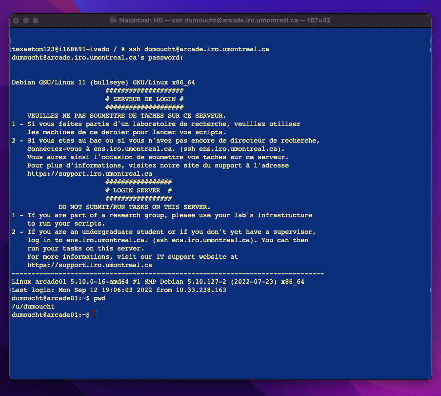
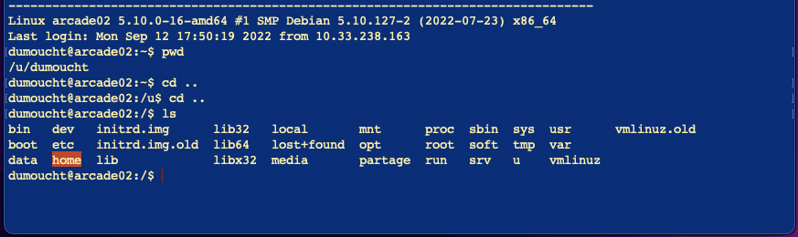
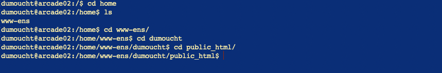
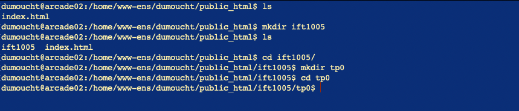
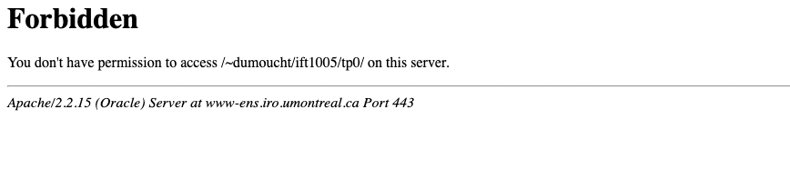
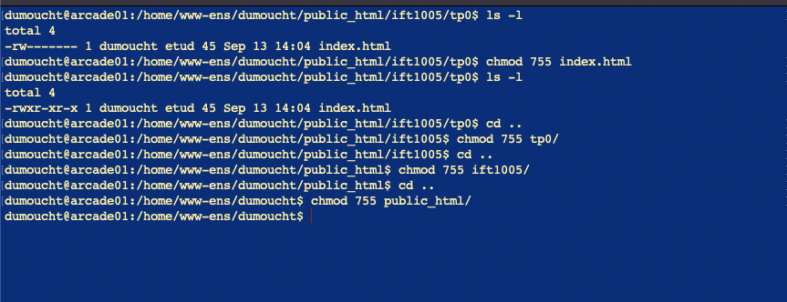

Suivez le tutoriel à la lettre et il ne devrait pas y avoir de problèmes
Ceux qui ont un système d'exploitation UNIX, ouvrez un terminal. Si vous ne savez pas comment, googlez... (i.e. how to open a terminal in [macOS | linux]?).
Ceux qui ont un système d'exploitation windows, je recommande de télécharger Putty et de partir l'application. Ceux qui aimerait utiliser Linux sur leur ordinateur, téléchargez wsl ubuntu et ouvrez un terminal ubuntu. (note: il est possible de faire la commande ssh sur le command line de windows, mais certains étudiants ont rencontré des problèmes avec cette méthode qui ne survenaient pas lorsqu'ils utilisaient Putty).
UNIX : entrer ssh votreusername@arcade.iro.umontreal.ca dans votre terminal. N'oubliez pas de remplacer votreusername par votre username DIRO.
Windows : dans Host Name, entrez votreusername@arcade.iro.umontreal.ca. N'oubliez pas de remplacer votreusername par votre username DIRO. Le port doit être 22, et le type de connection ssh. Clickez Open.
Entrez votre mot de passe DIRO. Il est normal que rien ne s'affiche lorsque vous tapperez le mot de passe. N'ayez crainte, les touches sont enregistrées. Il suffit de tappez le mot de passe sans faire d'erreurs. Et si vous faites une erreur, appuyer sur Enter et réessayer autant de fois que vous voulez.
Après une connection réussie, votre terminal devrait montrer la quelque chose de similaire à l'image sous:
Si vous faite la commande pwd (qui affiche le répertoire dans lequel on se situe), vous devriez voir à l'écran /u/votreusername. Nous voulons aller au répertoire /home/www-ens/votreusername/public_html. Pour ce faire, nous devons retourner à la racine (i.e. /). On utilise donc la commande cd .. 2 fois : la première fois pour se retrouver dans le répertoire /u, la deuxième fois pour se retrouver dans le répertoire / .
Une fois à la racine, la commande ls nous imprime le contenu du répertoire racine.
On y retrouve (surligné en orange) le répertoire home. Dirigeons nous dans home avec cd home. Faisons ls (maintenant à partir du répertoire home) et on retrouve (entre autre) le répertoire www-ens. Dirigeons-nous dans celui-ci: cd www-ens. Par la suite, dirigez-vous dans votre répertoire personnel: cd votreusername . Finalement, dans public_html: cd public_html.
Tout d'abord, on remarque que notre répertoire public_html ne contient qu'un fichier , soit index.html, grâce à la commande ls. Nous allons créer un répertoire appelé ift1005 pour 'storer' nos sites webs. Pour créer ce répertoire, on tape la commande mkdir ift1005. Puisque nous sommes dans le répertoire public_html, le nouveau répertoire ift1005 sera créé dans ce dernier. Faire ls nous révelera le nouveau répertoire.
Entrons dans notre nouveau répertoire: cd ift1005. Créons un nouveau répertoire intitulé tp0 à l'intérieur de ift1005: mkdir tp0. Entrons dans ce nouveau répertoire: cd tp0.
Créons notre fichier initulé index.html en tappant la commande touch index.html. Pour 'éditer' un fichier, on utilise un éditeur de texte pour terminal. Il en existe plusieurs, nous utiliseront nano. Pour éditer notre fichier index.html avec nano, tappons la commande nano index.html. L'éditeur de texte nano s'ouvriera prêt à 'éditer' notre fichier. Ajoutez-y le texte suivant (Vous pouvez modifier le texte se trouvant en les tags h1 pour ce qui vous plaît):
<hmtl><h1>Sample text here...</h1></hmtl>
Pour fermer nano, faire ctrl + x pour Exit, y pour sauvegarder les modifications, puis Enter pour confirmer de sauvegarder les modifications dans le fichier intitulé index.html.
Ouvrez une nouvelle page dans votre browser de préférence. Dans la barre de recherche, entrer l'url suivant:
https://www-ens.iro.umontreal.ca/~votreusername/ift1005/tp0/
Note: il faut remplace votreusername par votre username et garder le ~.
Oups! Forbidden
Le browser ne peut pas avoir accès au fichier index.html parce qu'il n'a pas les permissions nécessaire pour lire le fichier index.html. Il faut changer les permissions des fichiers de notre site web ainsi que des répertoires qui contiennent nos fichiers jusqu'au répertoire public_html inclusivement. Nous voulons que le propriétaire conserve toutes les permissions (7 = rwx) et donner au groupe et aux autres utilisateurs les permissions de lecture et d'écriture (5 = r-w).
Puisqu'on se situe présentement dans tp0, commençons par changer les droits de index.html. (note: a tout moment, effectuer ls -l pour voir les permissions sur vos fichiers et répertoires). Tapper chmod 755 index.html. Changons maintenant les permissions sur le répertoire tp0: cd .. puis chmod 755 tp0. Changons ceux de ift1005: cd .. puis chmod 755 ift1005. Finalement, changons ceux public_html: cd .. puis chmod 755 public_html.
Rafraichir la page qui affichait forbidden et voilà!